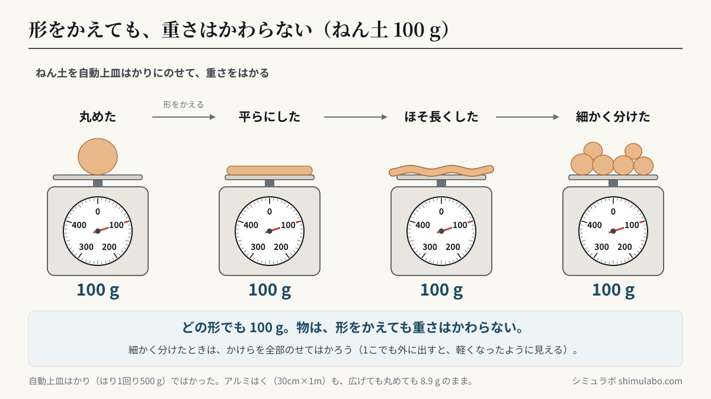
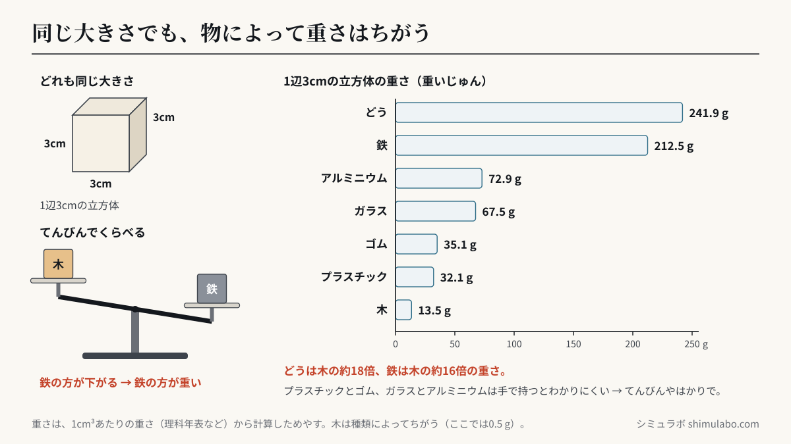

このシミュレーションでわかること
ポイント：物は、形をかえても重さはかわりません。ねん土を丸めても、平らにしても、細かく分けても、全部をはかりにのせれば重さは同じです。また、物は、同じ大きさ（体積）でも、しゅるいによって重さがちがうことがあります。1辺3cmの立方体では、木は約13.5 g、アルミニウムは約72.9 g、鉄は約212.5 gで、鉄は木の約16倍の重さです。
対応する単元：小学3年 A（1）物と重さ「（ア）物は，形が変わっても重さは変わらないこと」「（イ）物は，体積が同じでも重さは違うことがあること」（小学校学習指導要領解説 理科編 pp.31〜32）。解説では、てんびんを用いたり、自動上皿はかりで重さを数値化したりして比べ、結果を表に整理することが示されています。
①②では、ねん土（100 g）やアルミはく（約8.9 g）の形をボタンでかえると、はかりから下ろして形をかえ、もう一度のせるようすが動きます。結果は右の表にたまります。③では、同じ大きさの7しゅるいのブロックを指でてんびんの皿やはかりに運んで、どちらが重いか、何gかを調べ、重いじゅんにならべます。
授業での使い方
- 導入：実際にねん土を手にのせ、「平らにすると重さはどうなるか」「細かく分けると軽くなるか」を予想させます。手ごたえだけでは決めにくいことを話し合い、はかりで数にして調べる必要に気づかせます。
- 展開：実物で実験したあと、①で4つの形の重さを表にまとめ、全員の結果と見くらべます。「細かく分ける」でかけらを1つタップしてはかりの外に出すと重さがへるので、全部のせてはかることの大切さを確かめられます。アルミはく（②）は軽いので、自動上皿はかりの目もりでは読みにくく、デジタルはかりに切りかえると小数まで読めます。
- まとめ：③で、手で持ってくらべにくい「プラスチックとゴム」「ガラスとアルミニウム」をてんびんにのせ、はかりで数にして重いじゅんにならべます。同じ大きさでも鉄やどうはとても重いことを、身の回りの道具（鉄のフライパン、木のまな板など）と結びつけます。
児童への問いの例：
- ねん土を平らにしたら、重さはどうなるでしょう。重くなる・軽くなる・かわらない、のどれだと思いますか。そのわけも話しましょう。
- 細かく分けたねん土の重さをはかったら、はじめより軽くなりました。どうしてでしょう。どうすれば正しくはかれますか。
- 同じ大きさのプラスチックとゴムは、手で持ってもどちらが重いか分かりにくいです。どうすればくらべられますか。
しくみ・解説






図はタップすると大きく表示されます。授業のプリント・スライド・板書計画に自由に使えます（出典「シミュラボ」とページのURLを添えてください）。
ことばの意味
- 重さとは、物の重たさのことで、はかりを使うと「g（グラム）」などの数で表せます。
- 体積とは、物の大きさ（かさ）のことです。
- てんびんとは、左右の皿に物をのせて、下がった方が重いとくらべる道具で、つり合えば同じ重さです。
- 自動上皿はかりとは、皿に物をのせると、はりが動いて重さを目もりで表すはかりです。
同じ大きさ（1辺3cmの立方体）の重さ 早見表
| 物（ブロック） | 1 cm³ あたりの重さ（先生向け） | 1辺3cm（27 cm³）の重さ | 木を1としたとき |
|---|---|---|---|
| 木 | 0.5 g | 13.5 g | 1.0倍 |
| プラスチック（アクリル） | 1.19 g | 32.1 g | 2.4倍 |
| ゴム | 1.3 g | 35.1 g | 2.6倍 |
| ガラス | 2.5 g | 67.5 g | 5.0倍 |
| アルミニウム | 2.7 g | 72.9 g | 5.4倍 |
| 鉄 | 7.87 g | 212.5 g | 15.7倍 |
| どう（銅） | 8.96 g | 241.9 g | 17.9倍 |
どれも同じ大きさなのに、いちばん軽い木といちばん重いどうでは、約18倍もちがいます。プラスチックとゴム（約3 gちがい）、ガラスとアルミニウム（約5 gちがい）は、手で持つと区別しにくいですが、てんびんにのせるとはっきり分かります。
形をかえたときの重さ（このシミュレーションの記ろく）
| 物 | 形のかえ方 | 重さ |
|---|---|---|
| ねん土 | 丸めた・平らにした・ほそ長くした・細かく分けた | 100 g（どれも同じ） |
| アルミはく（30cm×1m） | 広げた・丸めた・おりたたんだ・細かくちぎった | 8.9 g（どれも同じ） |
| 細かく分けたかけらを1つ外に出す | はかりにのっている分だけになる | 軽く見える（全部のせると元にもどる） |
先生向けの補足：重さ（質量）は、物をつくっている粒の量で決まります。形をかえても、物を足したりへらしたりしなければ重さは変わりません。これは学習指導要領の「粒子の保存性」にかかわる内容で、第5学年「物の溶け方」（水に溶かしても全体の重さは変わらない）につながります。1 cm³あたりの重さ（密度）は中学1年で学ぶ考え方で、3年では「同じ大きさでも物によって重さがちがう」ととらえれば十分です。
このシミュレーションで単純にしていること
- ブロックの重さは、理科年表などにある1 cm³あたりの重さ（密度）から計算した目安です。木は種類によって約0.3〜0.8 g、ゴムやプラスチック、ガラスも種類によって重さがちがいます（木は0.5 g、ゴムは1.3 g、プラスチックはアクリル、ガラスはふつうの板ガラスとして計算）。
- アルミはくの重さは、はば30cm・長さ1m・あつさ0.011 mm（11 µm）として計算しています。
- 自動上皿はかりは、はり1回りが500 g（1目もり10 g）としています。目もりはいちばん近い1 g単位で読んだ数を表示しています。デジタルはかりは0.1 gまで表示します。
- てんびんは、少しでも重い方に大きくかたむくようにしています。つり合っているときは、はりがまん中で止まります。
参考
- 文部科学省「小学校学習指導要領（平成29年告示）解説 理科編」第3学年 A（1）物と重さ（pp.31〜32）（文部科学省 小学校学習指導要領解説のページ）
- 小学校理科（3年）の教科書の「物の重さ」の単元
- 国立天文台 編『理科年表』（鉄 7.87、アルミニウム 2.70、銅 8.96 g/cm³ など）
引用・転載について
本ページのシミュレーション結果・数値は、出典を明記いただければブログ・ニュース記事・SNS・授業や社内資料への引用を歓迎します。事前連絡は不要です。
推奨クレジット表記：
出典：シミュラボ「物と重さのシミュレーター（形をかえる・同じ大きさでくらべる）」 https://shimulabo.com/sims/mono-omosa/よくある質問
- 物の形をかえると、重さはかわりますか？
- かわりません。ねん土を丸めても、平らにしても、細かく分けても、全部をはかりにのせれば重さは同じです。物を足したりへらしたりしなければ、重さはかわりません。
- 細かく分けたねん土をはかったら、軽くなりました。なぜですか？
- かけらがはかりからこぼれたり、手や机にねん土が残ったりして、全部をのせていないからです。かけらを全部のせてはかると、はじめと同じ重さになります。
- 同じ大きさなのに、物によって重さがちがうのはなぜですか？
- 物のしゅるいによって、同じ大きさあたりの重さがちがうからです。1辺3cmの立方体では、木は約14 g、アルミニウムは約73 g、鉄は約213 gです。
- てんびんでは、どうやって重さをくらべますか？
- 左右の皿に物をのせると、重い方の皿が下がります。つり合ったときは、2つの重さが同じです。手で持って区別しにくいときも、てんびんならはっきり分かります。
- 自動上皿はかりのつかい方で気をつけることは？
- 平らな所に置き、何ものせないときにはりが0をさしているか確かめます。物はそっと皿のまん中にのせ、目もりは正面から読みます。
- 鉄は木の何倍くらい重いですか？
- 同じ大きさなら、鉄は木の約16倍の重さです（木の1 cm³あたりの重さを0.5 gとしたとき）。木の種類によって倍数はかわります。